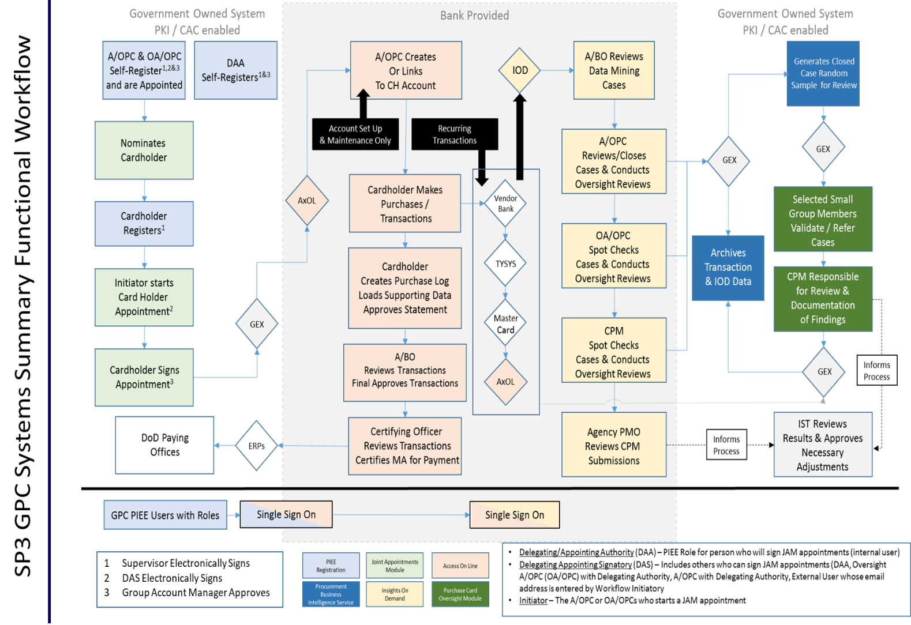

Chapter 3 - GPC Electronic Systems
3-1. Procurement Integrated Enterprise Environment (PIEE)
a. PIEE is the primary enterprise procure-to-pay (P2P) application for DoD and its supporting agencies. PIEE is a procurement portfolio capability that uses a Common Access Card (CAC) enabled single-sign-on capability to grant access to system modules (e.g., Electronic Document Access and Joint Appointment Module (JAM)) hosted both internal and external to that environment. Army mandates 100% use of PIEE single-sign-on. PIEE reduces DoD operating costs by facilitating rapid development and deployment of modules and providing common services such as testing, archive retention, and security. It also improves the quality of and access to enterprise-wide data by leveraging cloud technology and drawing data from multiple modules into a single data set for use across the platform.
b. PIEE controls access and enables automation through every phase of the procurement process in addition to reducing manual data entry and administrative tasks (e.g., role nominations, workflows, data pre-population, error tracking, document management, and training certificates). PIEE’s messaging capabilities provide a centralized way to securely communicate and share important information across organizations and roles. Global access to information such as reports, documents, and workflow statuses allow all users to have greater visibility into the procurement process at any time.
c. A/OPCs nominate cardholders and billing officials and track nominations and workflows within PIEE. GPC one-pagers are an excellent resource on how to perform actions within PIEE modules.
3-2. Joint Appointment Module (JAM)
a. JAM is the PIEE module used to initiate, review, approve, store, and terminate required delegations of procurement authority and/or appointments. As appropriate, JAM GPC appointments result in issuance of not only GPC Delegation and/or Appointment letters, but also limited-scope SF 1402 Certificate of Appointment (commonly referred to as a Warrant) and DD Form 577 Appointment/Termination Record – Authorized Signature (commonly referred to as a Certifying Officer Appointment). Personnel delegated the proper authority role identified in Table 3-1 can terminate the following appointments in PIEE and JAM.
Table 3-1: Roles and Termination Capability
| Appointments | ||||||
| Roles for your Organization/Activity | A/BO | CH | Certifying Officer | A/OPC | O/AOPC | CPM |
| GPC Help Administrator Manager (HAM) can terminate | X | X | X | X | X | X |
| OA/OPC can terminate | X | X | X | |||
| A/OPC can terminate | X | X | ||||
| DD577 Appointing Authority (AA) can terminate | X | |||||
| GPC Delegating/Appointing Authority (DAA) can terminate | X | X | X | X | X | X |
b. JAM is an application within PIEE that is mandated by DoD for use by GPC program participants. The Army is not required to issue or retain paper copies of appointments issued using JAM. The DPC Joint Appointment Module (JAM) GPC Role Descriptions Guide provides tables that identify GPC JAM roles and special designation authority types.
3-3. U.S. Bank Access Online (AXOL)
U.S. Bank AXOL is the Army GPC servicing bank’s electronic access system (EAS) in which GPC account maintenance, transaction management, and order management take place. AXOL gives program administrators the security, functionality, reliability, and convenience they need to manage and report on all their GPC programs with a single tool. Cardholders and billing officials can track orders and transactions daily as purchases post transaction data in AXOL and upload supporting documentation to ensure timely approval and certification of monthly statements. Appointed CHs, BOs, and A/OPCs must sign in from the PIEE homepage to access the servicing bank’s EAS.
3-4. MasterCard Insights on Demand (IOD)
IOD is the SmartPay®3 data mining (DM) tool used to adjudicate transaction cases and perform oversight functions. This tool has replaced the PCOLS Data Mining and the Program Audit Tool. IOD provides the capabilities to identify unusual spending patterns, monitor transactions for potential misuse, fraud, waste, and abuse, and flag these cases for review. Billing officials and A/OPCs use this tool to review and disposition system-generated cases, initiate cases, and meet all baseline data mining requirements. IOD is an artificial intelligence DM platform that automatically analyzes DoD’s GPC data to identify high-risk transactions. IOD enables the Army to fulfill the 10 USC 4754 (as modified by Public Law 112–194, Government Charge Card Abuse Prevention Act of 2012) requirement to “use effective systems, techniques, and technologies to prevent or identify improper purchases.” IOD also facilitates transaction reviews and enables documentation of any findings identified and corrective actions taken.
3-5. Global Exchange Service (GEX)
GEX is the DoD enterprise capability that provides secure messaging, mediation, and routing services along with system monitoring, data audit trails, and performance scalability across diverse communities of interest. Routing and transformation methods range from simple file transfers to web services communications; they are secure, reliable, and dynamic, reducing the cost and schedule to enable systems to be interoperable. GEX delivers mass volumes of EDI transactions with guaranteed delivery and end-to-end accountability, mitigating integration risk.
3-6. Total System Services Payment Solutions (TSYS)
TSYS is a federally registered service mark of Total System Services LLC. TSYS is a provider of seamless, secure and innovative solutions to card issuers. TSYS provides payment, processing, merchant, and related payment services to financial and nonfinancial institutions.
3-7. Enterprise Resource Planning (ERP)
ERP systems are large commercial-off-the-shelf platforms that are designed to contain the primary components of the business operations of an agency. Implementing ERP systems allows agencies to manage business functions as an integrated solution.
3-8. Federal Procurement Data System – Next Generation (FPDS-NG)
FPDS-NG is a web-based Government central repository for collecting, developing, and disseminating procurement data to Congress, the Executive Branch, and private sector. The Federal Government uses the reported data to measure and assess the impact of federal procurement on the nation’s economy, the extent to which awards are made to businesses in the various socio-economic categories, the impact of full and open competition on the acquisition process, and other procurement policy purposes. FPDS-NG contains data that the Federal Government uses to create recurring and special reports to the President, Congress, the Government Accountability Office, Federal executive agencies and the general public (FAR 4.606, Reporting Data). FPDS-NG access, training, and instruction manuals are available on FPDS.gov. Agencies are responsible for collecting and reporting Contract Action Report (CAR) procurement data to FPDS-NG as required by FAR 4.6. The requirements for reporting GPC actions to FPDS-NG are contained in DFARS PGI 204.6, DoD Charge Card Guidebook A.1.6, and DPAP memo dated 26 October 2010.
3-9. Wide Area Workflow (WAWF)
a. WAWF is an application in the PIEE eBusiness Suite used by contractors to invoice and by Government officials to accept and certify for goods and services. Contractors must submit contract invoices electronically, mandated by Public Law: Section 1008 of the NDAA of FY 2001. DFARS Clause 252.232-7003 (DFARS 232.7004) requires electronic invoicing and electronic supporting documentation. WAWF allows vendors to submit and track invoices and allows the Army to receive and accept those invoices over the Web, enabling the Army to process those invoices in a real-time, paperless environment.
b. GPC Use of WAWF. When the GPC is used as the method of payment on a contract, the contractor must create a receiving report in WAWF. The Government acceptor must then accept the receiving report in WAWF.
c. WAWF users must register in PIEE and request the corresponding role. The contractor will request the “Vendor” role, and the Government acceptor will request the “Acceptor” role. Refer to the "Registration" link on the PIEE home page and the Help button for details on registering in WAWF. For more information, contact DFAS Customer Service: 1-800-756-4571. See PIEE web-based training for more information on the WAWF module.
3-10. PAM (Procurement.Army.Mil) Portal
a. The ODASA(P)'s interactive Knowledge Management portal, Procurement.Army.Mil (PAM), serves as an official Army-wide source for acquisition policy, templates, learning tools and certified training. PAM provides Army contracting procedures and updates to critical programs and systems, including instant access to Army GPC policies, standard business processes and operating procedures. PAM's GPC page is https://procurement.army.mil/gpc.
b. A/OPCs, CHs, and BOs should use the PAM portal to access current GPC documents, samples, and processes as described throughout this AFARS Appendix EE. Available documents on PAM include, but are not limited to the following:
1) Army Purchase Request and Approval document
2) Sample Merchant Category Code (MCC) Override Requests
3) Procurement Management Review (PMR) Process
4) VCE/PMR GPC Toolkit
5) Sample Separation of Duties Waiver
6) Ammunition Process and Waiver Request
7) Refund Process
8) Level 4 A/OPC Annual Assessment
9) Sample Information Technology Approval System (ITAS) Approval Waiver
10) Army GPC Training Slides
Figure 3-1: GPC Electronic Systems Overview

3-11. Statement Reconciliation and Certification
a. The CH reconciles the statement of account throughout the month by reviewing it for accuracy and comparing it with his or her purchase log entries. If the statement is correct, the CH approves it within three business days from the end of the billing cycle. If the statement is incorrect, the CH must contact the merchant and request correction. If the merchant does not cooperate or provide the ordered goods and services, the CH disputes the incorrect transaction.
b. The BO must ensure GPC transactions are legal, proper, and correct in accordance with Government rules and regulations. If the billing statement is correct following the BO’s review throughout the month, certification of the billing statement is done within five business days from the end of the billing cycle. If the BO finds questionable transactions, the CH must be contacted to review supporting documentation. If the BO determines the CH is negligent, the BO takes appropriate action in accordance with DOD and Army policy, and informs the Level 4 A/OPC of the action taken. Disputes must be filed by one of three methods: calling the Servicing Bank, faxing over a Cardholder Statement of Questioned Items form or using the Servicing Bank’s dispute process in AXOL, within 60 days of the cycle end date in which the transaction appeared in order to retain the Government’s dispute rights.
c. Independent Receipt and Acceptance. The cardholder ensures receipt and acceptance of goods, services, and accountable (to include sensitive, classified, and pilferable) property purchased is properly performed and confirmed through proper documentation by an individual other than the CH. The date received, along with the signature (or electronic alternative when supported by appropriate internal controls), printed name, telephone number, and office designator or address of the receiving official will be recorded on the sales invoice, packing slip, bill of lading, or other shipping or receiving document as confirmation of receipt. The billing official verifies the existence of receipt and acceptance documentation during reconciliation of the billing statement.
3-12. Confirm and Pay
a. The Army certifies invoices for payment after all purchased items have been confirmed. This procedure has been called “Confirm and Pay”. Each BO must establish a system to flag and track all transactions certified for payment with proof of receipt and acceptance. This procedure ensures all transactions reconciled and approved for payment have receipt verified.
b. Under the following condition, the Army has adopted the following process in order to allow the Servicing Bank to be paid for items that have been shipped by the merchant but not received by the organization to prevent withholding payment of the entire billing statement for a few transactions. Transactions that have been reconciled and approved for payment will have receipt verified no later than 45 days after the date of the original invoice. If receipt and acceptance cannot be verified, the CH shall protect the Government’s rights by disputing the transaction prior to the end of the dispute period.
3-13. File Retention
a. The approving or certifying official maintains certified billing statements and supporting documents for six years and three months in accordance with National Archives and Records Administration (NARA), General Records Schedule (GRS) 6, “Accountable Officers’ Accounts Records”. See DOD FMR Volume 15, Chapter 6 for additional information on document retention for accountable officers’ records (10 years from the date of case closure for Foreign Military Sales).
b. All financial records, both paper and electronic, must be retained documenting the GPC transactions in a file to include (1) the BO statement, (2) the CH statement, and (3) all original receipts and documentation for those statements.
c. Receipts are considered supporting documents for the certified billing statement and in accordance with the DOD FMR, Volume 1, Chapter 9, must be retained for six years and three months after final payment. Original receipts are preferred; however, printed electronic forms or copies of an itemized receipt are acceptable. The receipt must be legible; goods must be itemized/detailed with the item description, quantity, price, and extended price; indicate vendor’s name and address; date of the purchase; and must indicate paid by credit card or zero amount due. The BO maintains these records, either physically in his/her physical possession, or when appropriate transfers to a records holding area. However, if certifying electronically, the CH and BO may rely on the Servicing Bank recordkeeping for the BO and CH statements. Original records are the property of the U.S. Government and may not be removed from government control by the BO for any reason.
d. Level 4 A/OPCs shall retain hard copy file documentation for Government credit card files documenting application for cards and approval, account maintenance, letters of GPC delegation (CH or BO), ethics certification (if applicable), required training certifications, results of annual reviews, and related information for three years after the fiscal year in which the card account is cancelled.
e. Documents received and/or generated by the cardholder to support transactions shall be retained for six years and three months after final payment. Data residing in the bank’s electronic access system is maintained by the bank for six years and three months. Reports may be retrieved from the Bank’s electronic access system (EAS) for the previous two years. Reports covering data for periods beyond the previous two years are available from the Bank upon request.
3-14. Convenience Checks and Foreign Draft Checks
a. Convenience checks and Foreign Draft Checks (FDCs) provide activities with the flexibility to issue checks for payment of supplies and services. With the exception of contingencies, convenience checks shall not be written over the micro-purchase threshold. Convenience checks are issued for domestic purchases valued in U.S. dollars when the merchant does not accept the GPC. DOD activities have the flexibility to issue convenience checks to pay for products and services at the activity level. FDCs are issued for overseas purchases valued in foreign currency when the merchant does not accept the GPC. The following requirements apply to one or both of these financial instruments as specified.
b. The CH shall not use a convenience check or FDC unless its use is considered advantageous to the activity after evaluating all alternative methods of purchase. Convenience checks and FDCs may not be used to avoid the normal GPC payment process. Before a check is issued, the paying agency must make every effort to use the GPC, including making maximum efforts to find and use merchants that accept the GPC. The authority to maintain a checkbook shall be justified on an individual organization basis and controlled and monitored by the organization’s CCO. The number of checkbooks per installation must be kept to a minimum. A delegation of procurement authority is granted in writing by the CCO for the maintenance and use of convenience checks.
c. Convenience checkbook accounts are available only to organizations that maintain active GPC accounts in good standing. A convenience checkbook holder may have a GPC account and a separate convenience checkbook account. Convenience checks are pre-numbered, and their use is controlled with a separate convenience check purchase log for each account. Checkbook holder shall maintain original voided checks.
d. Convenience checks and FDCs are not issued for more than the micro-purchase threshold (or the foreign currency equivalent), and must be issued for the exact payment amount. In the case of an FDC, the payment amount includes the administrative processing fee. However, in the case of convenience checks, the payment amount does not include the administrative processing fee. The convenience check processing fee is added by the servicing bank during processing of the transaction, and the addition of the processing fee is not considered a split requirement. “Splitting” payment amounts across more than one convenience check or FDC to keep the purchase amount per check below the micro-purchase threshold limit is prohibited. Convenience checks and FDCs will not be issued as an “exchange-for-cash” vehicle to establish cash funds. If merchants issue credit or refunds by cash or check, the funds must be immediately credited to the account against which the purchase was originally made.
e. Convenience checks and FDCs are negotiable instruments and must be stored in a locked container, such as a safe or locking filing cabinet. Checks must be accounted for appropriately to prevent loss, theft, or potential forgery. Convenience check and FDC accounts must be reviewed quarterly by a disinterested party and not the A/OPC. The checks are reconciled just as other GPC transactions, as a part of the monthly statement billing cycle. Copies of voided checks must be retained through the carbon copy or photocopy the original check as a part of the account-holder's original documentation files.
f. The same purchase prohibitions that apply to the GPC apply to the convenience check and the FDC.
g. The normal dispute process associated with the GPC is not applicable to convenience checks and FDCs. Any concerns over a purchase made with a check must be resolved directly with the merchant. The check writer is solely responsible for securing credit or disputing purchases with the merchant. Each organization is responsible for all checks written on an account; unless it is determined fraud is involved (see Section 4-5 on fraud). In some cases, payment can be stopped on a convenience check that has been written if the check has not yet been posted to an account. To stop payment on a check, the check-writer must call the Servicing Bank’s Customer Service Department to receive instructions on processing the action.
h. FDC accounts are established in the contracting office. Customer activities desiring FDC accounts outside the contracting office must justify, in writing, to the CCO why an account is necessary. FDC BOs, cashiers, and custodians must receive standard GPC training prior to being issued active FDC accounts.
i. The check cashier is the only person who has the authority to issue and sign checks. He or she may hold a GPC account in addition to the convenience check FDC account, as long as the accounts are maintained separately.
j. The check custodian orders, receives, stores, issues, inventories, reconciles, and disposes of FDC stock. He or she is not responsible for approving and processing requirements for check writing.
k. The BO authorizes and certifies the issuance of FDCs written by the cashier. In order to maintain effective internal controls, the BO may not perform the check-writing and maintenance functions of the cashier and custodian. All convenience checks and FDCs must be reconciled as a part of the monthly billing statement at the end of the billing cycle.
l. Establishing Convenience Check Accounts. Any U.S. Government employee, military or civilian, including local national employees, may be selected for appointment as a check writer. Contractors working for the Army must not to be selected for appointment. Requests to establish convenience check accounts must be justified in writing by the organization’s Commander/Director and forwarded to the Level 4 A/OPC. If approved, a delegation of procurement authority is granted in writing by the CCO, for the maintenanceand use of convenience checks. Required information must consist of the following:
(1) Reason for requesting checks
(2) Types of vendors the check will be written to
(3) Estimated dollar amount of checks intended to be written within a 12-month period
(4) Single and monthly purchase limits
(5) Check writer’s complete name, office name, address, e-mail, phone/fax number
m. Use of Convenience Check Accounts.
(1) Convenience checks may be used for small purchases, when supplies or service are available for delivery within 15 days whether at the contractor’s place of business or at destination. Convenience checks must not be used for employee reimbursements, cash advances, cash awards, travel-related transportation payments, or meals. Purchases made with the check must not require detailed specifications or an inspection report. Convenience checks should not be used for recurring payments.
(2) Convenience checks may be used for purposes not related to small purchases when such expenditures are authorized by other regulations such as:
(a) Delivery charges associated with the purchases made with a convenience check when the contractor is requesting to arrange delivery. These charges include local delivery, parcel post including cash on delivery (COD) postal charges, and line haul or inter-city transportation charges, provided the charges are determined in the best interest of the Government.
(b) C.O.D. charges for supplies ordered for payment with a convenience check upon delivery.
n.Tax Reporting - The 1099 Tax Reporting Process (TRP) was developed to collect convenience checks written for services, rent, medical and health care services and other Internal Revenue Service (IRS) requirements. This data is used to process IRS 1099-MISC forms. The BO is responsible to monitor the check writer's compliance with 1099-TRP.
(1) Convenience check holders must submit check data to DFAS on any checks they issue for tax reportable categories. This should be done throughout the year and is suggested to be completed monthly, and can be done on-line once the check writer and their corresponding A/OPC officially request access to the 1099 TRP. The 1099 TRP is restricted to authorized users only. Access is optional for the BO, but may be necessary to fulfill the BO's responsibility to ensure the check writer is compliant with 1099 TRP.
(2) 1099 TRP System Access: To obtain access, users must complete two system access forms, DD form 2875 and DD form 2869. The link to access the System Access Request Forms is: https://dfas4dod.dfas.mil/systems/1099/. Carefully follow the instructions for completing the forms. All check writers and A/OPCs must complete both forms. Fax completed forms to 614-693-5452 or Defense Switched Network (DSN) 869-5452, or scan and email them to cco.checks@dfas.mil. Prior to accessing the 1099-TRP, all users should read the Convenience Check User's Manual.
3-15. Office Supply Blanket Purchase Agreements (BPAs)
The Army must satisfy requirements for supplies and services from or through the sources and publications listed in the descending order of priority in FAR Part 8.002. The Office Supply BPAs fall under mandatory Federal supply schedules and must be utilized for office supply purchases unless an exception applies. The Office Supply BPAs can be accessed through the Army Corridor of the DOD EMALL site: https://dod-emall.dla.mil/acct/ . The primary goals of the Office Supply BPAs are to ensure that office product purchases are in compliance with the statutory preferences afforded to products manufactured under the AbilityOne Program, capture economies of scale, and realize significant savings while providing opportunities for small business. Exceptions to the mandatory use of the BPAs and DOD EMALL are as follows:
(1) This policy does not apply to purchases made Outside the Continental United States (OCONUS).
(2) Purchases made directly from AbilityOne or from AbilityOne Base Supply Centers (BSCs). Cardholders may purchase office and cleaning supplies directly from AbilityOne Base Supply Centers and are exempt from using the Office Supply BPAs. These products are available at Base Supply Centers on military installations or in federal buildings.
(3) Cardholders may purchase National Stock Number (NSN) items directly from AbilityOne BSCs and are exempt from using the Standard Army Retail Supply System (SARSS) or the Office Supply BPAs. When NSN products are not available from the BSCs, then cardholders should use the SARSS to purchase NSN Products.
(4) Purchases made from wholesale supply sources such as stock programs of the General Services Administration (e.g. GSA Global Supply Center).
(5) Cardholders may purchase an item from another source if an urgent need exists for an unplanned requirement needed for the same day. Poor acquisition planning and inadequate market research would not apply to this exception. Use of this exception requires valid documentation and retention in the purchase card file.
(6) NAFI cardholders must comply with the required sources (see paragraph 3-5). When purchasing office supplies, NAFI GPC cardholders shall consider the AbilityOne Base Supply Centers or the Office Supply BPAs on the DOD EMALL Army Corridor as a practical choice. If it is not in the best interest of the NAFI to purchase through AbilityOne Base Supply Centers or the Office Supply BPAs, the cardholder may consider other required sources. The cardholder must adequately document the decision to not purchase from the AbilityOne Base Supply Centers or the Office Supply BPAs before an open-market source can be considered.
(7) In the event the DoD EMALL is unavailable for more than 24 hours, cardholders may place orders with the Office Supply BPA vendor through another form of communication.
3-16. Rebates/Credits
a. Rebates are posted as credits against billing statements and applied at the billing statement level unless specified otherwise by the Level 2 A/OPC. Rebates are automatically assigned to the default line of accounting (LOA) on the billing statement. BOs should reallocate the rebates across various LOAs (of the same appropriation) to the extent that no single LOA has a credit balance. Under no circumstance will the CH retain gift checks, vendor rebates or other purchase incentives that can be converted to personal use. If received, these items must be turned over to the U.S. Treasury.
b. Unless specific authority exists allowing rebates to be used for other purposes, rebates must be returned to the appropriation or account from which they were expended, and can be used for any legitimate purchase by the appropriation or account to which they were returned, or as otherwise authorized by statute.
c. Credit transactions are posted as credits against billing statements, applied at the billing statement level. When a closed account carries a credit balance the amount shall be sent via check to the Level 4 A/OPC. The check will be addressed to US Government or US Treasury. The Level 4 A/OPC shall work with his/her RM in identifying an account and in determining how the credit is distributed within the installation.
d. Reimbursements such as rebates, merchant credits, or other credits attributable to accounts closed during the quarter or accounts not having enough purchases to offset the credit, require the Servicing Bank to issue quarterly checks to the Level 4 A/OPC. Merchant credits must be applied back to the funding appropriation. Rebates must be used in the fiscal year they are received.
e. Each Level 4 A/OPC is directed to deliver all reimbursement check(s) to their RM within five (5) days of receipt, retain a copy of each reimbursement check(s), and obtain the RM's signature acknowledging their receipt and acceptance of the reimbursement check(s). The CH, BO, and RM should have a process to ensure adequate controls are in place to track credits and rebates. Questions related to reimbursements in the form of a rebate, merchant credit, or other credit should be directed to your local RM. CHs must forward their monthly cardholder statement to the BO with the appropriate supporting documentation, within 5 working days, to maximize rebates and minimize prompt payment penalties.
f. Rebate policy guidance is available in the DOD FMR Volume 10 Chapter 2, OMB Circular A-123 Appendix B Chapter 7, and DOD Charge Card Guidebook Appendix K paragraph 13.